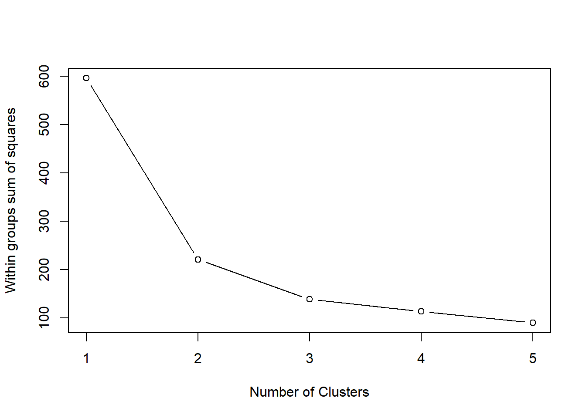
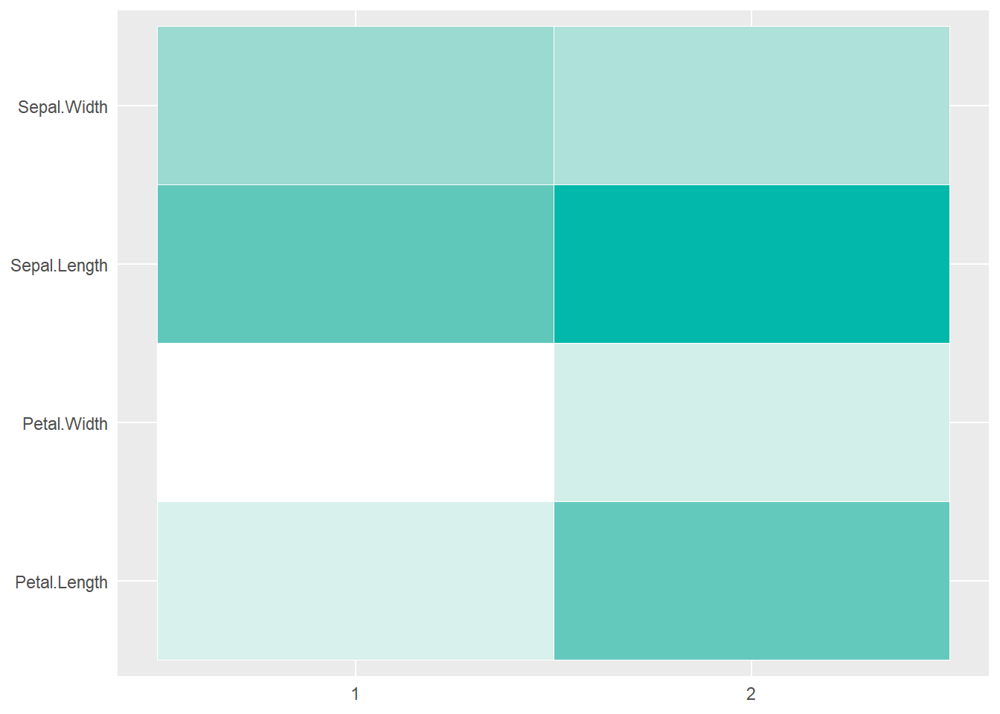

2 Unsupervised learning
Test 123
2.1 K-means
library(tidyverse)
library(cluster)Prepare data selection.
kmeans_data <- iris
kmeans_columns <- c("Sepal.Length", "Sepal.Width", "Petal.Length", "Petal.Width")
kmeans_selection <- kmeans_data[kmeans_columns] %>% scale() %>% data.frame()Execute silhouette analysis to determine number of centroids.
silhouette_tries <- 10
silhouette_avg_f <- function(k_value) {
model <- pam(x = kmeans_selection,
k = k_value)
model$silinfo$avg.width
}
silhouette_widths <- map_dbl(2:silhouette_tries, silhouette_avg_f)
silhouette_results <- data.frame(
k = 2:silhouette_tries,
sil_width = silhouette_widths
)
silhouette_results## k sil_width
## 1 2 0.5817500
## 2 3 0.4566432
## 3 4 0.4091122
## 4 5 0.3574385
## 5 6 0.3399978
## 6 7 0.3263242
## 7 8 0.3321157
## 8 9 0.3310056
## 9 10 0.3508136max(silhouette_results$sil_width)## [1] 0.58175kmeans_centroids <- silhouette_results %>%
arrange(desc(sil_width)) %>%
slice(1) %>%
pull(k)
rm(silhouette_avg_f, silhouette_tries, silhouette_widths, silhouette_results)Eyecheck scree plot for the elbow to determine number of centroids.
# scree parameters
scree_wss <- 0 # initialize total within sum of squares error
scree_k <- 5 # number of clusters to cycle
scree_ns <- 10 # number of random starts to cycle
# For 1 to 15 cluster centers
for (i in 1:scree_k) {
km_out <- kmeans(kmeans_selection, centers = i, nstart = scree_ns)
# Save total within sum of squares to wss variable
scree_wss[i] <- km_out$tot.withinss
}
# Quickplot of total within sum of squares vs. number of clusters
plot(1:scree_k, scree_wss, type = "b",
xlab = "Number of Clusters",
ylab = "Within groups sum of squares")
# clean up environment
rm(i, scree_k, scree_ns, scree_wss, km_out)Run k-means algorithm.
# set random seed for reproducibility
set.seed(1337)
# run k-means with 3 centers and 20 starts
kmeans_output <- kmeans(kmeans_selection, kmeans_centroids, nstart = 20)Merge the results to our original data, which is not scaled.
kmeans_results <- kmeans_data %>%
mutate(Cluster = kmeans_output$cluster) %>% # Merge clusters to data
mutate(Cluster = as.character(Cluster)) %>% # change to string for plotting asthetics
pivot_longer(cols = c(Sepal.Length, Sepal.Width, Petal.Length, Petal.Width), names_to = "Feature", values_to = "Value") %>%
select(Feature, Value, Cluster)Get the average value for each feature so can get some useful business information about the clusters.
kmeans_clustermeans <- kmeans_results %>%
group_by(Feature, Cluster) %>%
summarise(
Value = mean(Value)
)## `summarise()` has grouped output by 'Feature'. You can override using the `.groups` argument.Plot a heatmap of the cluster feature means.
# remove row names cluster and melt data
kmeans_clustermeans %>%
# plot heatmap
ggplot(aes(Cluster, Feature)) +
geom_tile(aes(fill = Value),
colour = "white") +
scale_fill_gradient(low = "white",
high = "#01B8AA") +
theme(legend.position = "none",
axis.line = element_blank(),
axis.ticks = element_blank(),
axis.title.x = element_blank(),
axis.title.y=element_blank())
Let’s clean up our environment!
rm(kmeans_clustermeans, kmeans_data, kmeans_output, kmeans_results, kmeans_selection, kmeans_centroids, kmeans_columns)